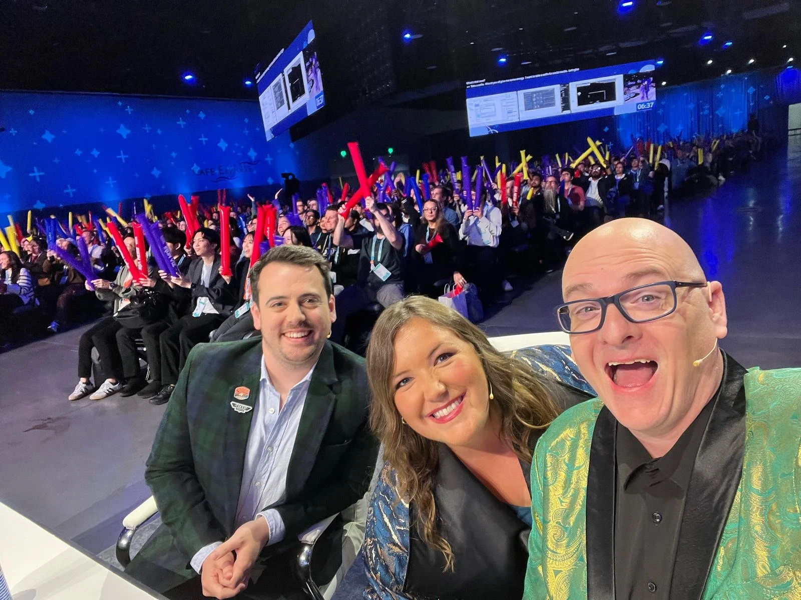

It has been a week since I left San Diego at the end of my 3rd experience of an in-person Tableau Conference. While last year I had the most unique and best view of TC anyone could wish for, it was nice to be back in a more relaxed state. Without the stress of competing in IronViz I felt much freer to enjoy walking around data village, eat amazing food with friends new and old, and even attend the occasional conference session! What I want to do in this blog post is share some of my highlights and key takeaways from an amazing week.
IronViz
It’s hard for me to start anywhere else! I was back in the IronViz cast as a judge this year and it was a delight to be able to contribute to what I will always consider the number one highlight of any Tableau Conference. The experience from the judges table was one that I never thought I’d have, and it was every bit amazing as it was overwhelming. Mark Bradbourne and Amanda Makulec know their stuff far more than I do, both technically and practically. I found myself needing to remember why I was there. I knew from my own experience, and from having dived into the best IronViz entries from the past, what I was looking for in the final dashboards.

Bo McCready, Kathryn McCrindle, and Ryan Soares all brought their A-Game as finalists. Their ability to take a dataset that so many people in the audience were familiar with and come up with unique analysis forming stories. An argument could easily be made for any of them taking the crown. Ryan has always stuck out to me as a top class designer, and his viz in the final was no different. Clean and deliberate, with a little bit of artistic flair that helped bring everything to life. Kathryn’s analysis was fascinating. The link to locations of airports showed a deep understanding of the data, and presented nuance that not many other people would have noticed. Going back to the root cause is often the best way to solve issues that we face! The story that Bo presented was outstanding. He took the crowd on a journey and the destination was them. Highlighting the need for a community around us to achieve anything is what IronViz is really all about. I know that there are so many people who were influential in me reaching the stage, and I am sure many of us have a similar experience.
Overall, it was a totally different angle to look at a competition that I have become increasingly fond of over the last 7 years. In a future blog post I’ll break down in more detail what I was looking for as a judge, and what you can do to impress the audience of your IronViz (and other) dashboards. For now, let’s look at the rest of the conference!
Devs On Stage
Next to IronViz, my favourite session from my first Tableau Conference way back in 2019 was Devs on Stage. Having it back in its own session this year as opposed to included as a segment of the main keynote was fantastic. The energy during the session this year was amazing, and there are some incredible features on the horizon for all Tableau users. Other people will do a much better job at going through the promised features than I could, but here are a few that I am most excited for.
The ability to create custom colour palettes within Tableau Desktop. While we can bring in our own colour palettes through the Preferences file, being able to do this within Desktop itself with a colour picker and the aid of AI will be a game changer. It has often annoyed me that adding a colour palette requires closing and reopening Desktop, but this new feature promises the removal of that irritation. I can’t wait!
Rounded corners. Perhaps it’s not strictly necessary; perhaps there are other things that are more important that we would love to see addressed. But for me, this isn’t just about the rounded corners. It’s about Tableau (or Salesforce) listening to what the userbase has been requesting for years. It addresses a concern that has been voiced by many: that Tableau is losing its focus on what people really want in an effort to align closer with Salesforce products and objectives. Rounded corners are a nod in the right direction. A nod to Tableau still listening to what the Community want the most.
The feature that got me the most excited was the recycle bin feature on Cloud and Server. About 18 months ago I accidentally clicked delete on a dashboard on Server and poof. It didn’t even think about it, it just disappeared. That weekend I spent hours rebuilding what I had lost, wishing there was a way to bring it back. I can’t wait for this to become available as a way of protecting my stupid self from my own stupid actions! I am also looking forward to this coming to Tableau Public because surely we’ve all been there as well..!
Chart Chat
Having spent much of the week with Andy Cotgreave and Amanda Makulec, I was reluctant to admit to this being my first experience of ChartChat. Together with Steve Wexler and Jeff Shaffer, they form a panel of data visualisation experts that have a ridiculous amount of knowledge to share. Taking a chart from the media, they broke it down and each took a turn to rebuild it into something more informative and easier to read. Seeing 4 different approaches at the same thing is incredibly valuable, and I took some new ways of thinking about data visualisation away just from seeing their thought processes.
If you haven’t tuned into ChartChat before, I highly recommend you do. I know I’ll be back! And did you know that the team have a new book coming out later this year? Dashboards that Deliver looks like it will be a great addition to any data viz bookshelf, and will be going right next to my copy of Big Book of Dashboards as soon as I can get my hands on it!
The Vizzies
The final session that I want to highlight is the Vizzies. This award show is the best way of celebrating the best that this community has to offer. Seeing the ever growing list of nominees for each award makes me feel proud to be part of a community with so many amazing contributors.
This year I was nominated for 6 awards, finding my name on the screen next to Best Designer, Storyteller Extraordinaire, “I Didn’t Know Tableau Could Do That”, Content Creator, Viz of the Year, and Community Leader. Honestly, I’m still in shock. Although I didn’t win any of the awards, knowing that people see what I do and consider my contributions to the community this valuable means the world to me.
I am so excited for the year that lies ahead before the next Tableau Conference. I’m feeling energised to give more back to this community than I have before, and can’t wait to see what you do as well! As part of this, I am expanding my offering of 1-1 Viz Help Sessions. To give back to a community that has given me so much, these sessions are now completely free of charge. Head over to this page on my website, book a slot, and let’s talk about your data viz ideas and how to take your work to the next level. I can’t wait to meet you!
Take care // Chris